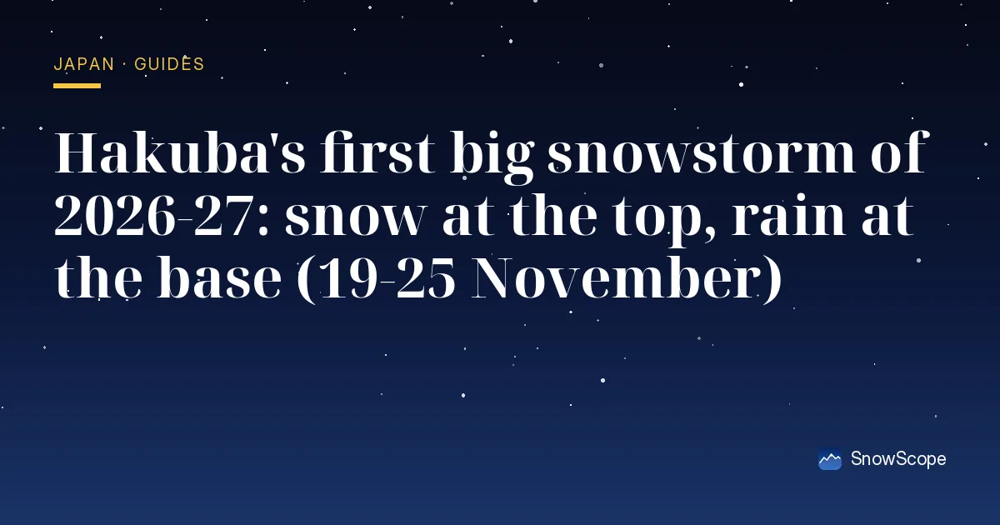
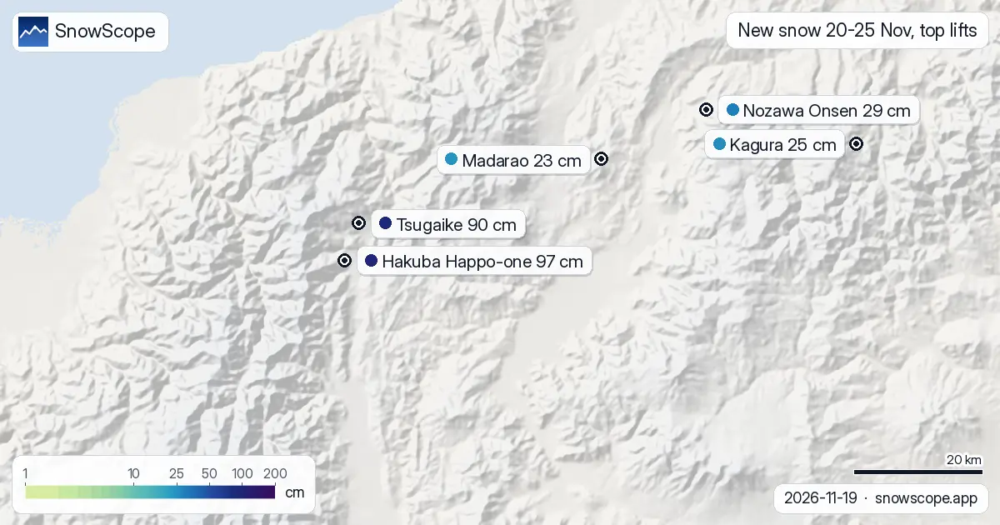

Hakuba's first big snowstorm of 2026-27: snow at the top, rain at the base (19-25 November)
Winter starts this week in Hakuba, but only halfway up the mountain at first. From 19 to 25 November 2026, the top of Hakuba Happo-one, at 1,827 m, gets about 174 cm of new snow as a middle forecast, with a range from 140 cm to 199 cm. At the base, at 751 m, the same storm brings mostly rain for the first two days. Here is what to expect, day by day and height by height.
See the live snow forecast for Hakuba Happo-one in the SnowScope appSnow depth, powder alerts and the 3D map, free.
Day by day at three heights
Today, 19 November, the storm arrives. At the top lift the middle forecast is about 50 cm of new snow, between 43 cm and 80 cm, with temperatures from about -7 °C to -1 °C. At mid-mountain, at 1,289 m, it is a mix: about 22 cm of snow and a lot of wet weather. At the base it is rain, about 32 mm, with temperatures from about 2 °C to 7 °C.
On 20 November the snow keeps coming: about 42 cm at the top and 41 cm at mid-mountain, where it has turned to snow for good, with highs near -2 °C. The base still gets rain, about 26 mm, with the temperature hovering just above freezing. This is the day the snow line sits right in the middle of the ski area.
On 21 November colder air takes over. The top gets about 33 cm more and mid-mountain about 22 cm, and the base finally sees snow: about 7 cm. 22 November is the tail of the storm, with about 7 cm at the top, 7 cm at mid-mountain and 2 cm at the base, and very cold nights near -13 °C at the top.
23 November should be the quiet, cold, clear day, with no new snow and a night around -10 °C at mid-mountain. A second, weaker system follows on 24 and 25 November: about 22 cm and 14 cm at the top, but again with some rain at the base on 24 November, about 15 mm.
Why the base gets rain
Hakuba is famous for snow, but late November is still the warm edge of the season. The air arriving with this storm is cold enough for snow above roughly the middle of the ski area, and too mild below it. The village sits at about 703 m and the base lifts at 751 m, so they are under the snow line for the first two days.
That gap is the main thing to understand if you ski early. The total of about 174 cm at the top and about 110 cm at mid-mountain is a serious start. At the base, the forecast is only about 10 cm of snow for the whole week, and the rain on the first two days will wash out some of it. Expect a white upper mountain and a green or muddy valley at first.
Around Hakuba: Tsugaike, Nozawa and the rest
The storm is aimed at the high peaks of the Northern Alps. Tsugaike Kogen, at the north end of the Hakuba valley, gets about 90 cm at the top from 20 to 25 November, almost as much as Happo-one. Across the valley to the east the totals drop fast: Nozawa Onsen gets about 29 cm at the top, Madarao about 23 cm, Kagura about 25 cm and Shiga Kogen about 32 cm.
So for this first storm, height and the western side of Nagano matter more than the usual reputation. Nozawa and Myoko often do very well in the middle of winter, when the north-westerly monsoon brings snow off the Sea of Japan. This early storm favours the tall Hakuba peaks instead.

Tips if you are in Hakuba this week
Watch the lift openings: when they open early, the highest lifts are the ones to run first, and the upper slopes will have the real snow. Mid-mountain becomes good from 21 November, once the rain stops and the cold air settles.
Fresh snow on a thin, rain-soaked base can hide rocks and streams, so stay on prepared runs where they are open. The back-country around Hakuba is serious mountain terrain and the first big storm of the season loads it fast; go only with a local guide and check the avalanche bulletin.
Follow Hakuba every day
SnowScope now models Japan every day. Open Hakuba on the map to see the snow at each height, and follow it to get a message when the next big snowfall comes.
Tips for skiers
- Top lift: about 50 cm on 19 November and 42 cm on 20 November.
- Base: rain on 19 and 20 November, first snow at the bottom on 21 November.
- 23 November: dry and very cold, the best day for clear views.
More maps (external sites)
References and credits
- Japan Meteorological Agency, AMeDAS snow depth observations www.jma.go.jp/bosai/map.html#contents=amedas&elem=snow
About these numbers
Snow depth today: measured at Japan's official weather stations at 09:00 Japan time on 19 November 2026; each station measures the snow on its own plot, usually in a town or valley. Coming snow: an ensemble of weather models for each resort's top lift, given as the lowest, middle and highest forecast.
Cite this report
For research, teaching or the press: the numbers and charts are free to reuse under CC BY 4.0 with this citation.
SnowScope (2026), Hakuba's first big snowstorm of 2026-27: snow at the top, rain at the base (19-25 November), https://snowscope.app/blog/en/2026/11/hakuba-first-big-snowstorm-19-25-november-2026.html, accessed 2026-11-19
SnowScope (Atlas Labs). (2026, November 19). Hakuba's first big snowstorm of 2026-27: snow at the top, rain at the base (19-25 November). SnowScope snow reports. https://snowscope.app/blog/en/2026/11/hakuba-first-big-snowstorm-19-25-november-2026.html
BibTeX
@misc{snowscope2026hakubafirstbigsnowstorm1,
author = {{SnowScope (Atlas Labs)}},
title = {Hakuba's first big snowstorm of 2026-27: snow at the top, rain at the base (19-25 November)},
year = {2026},
month = nov,
howpublished = {\url{https://snowscope.app/blog/en/2026/11/hakuba-first-big-snowstorm-19-25-november-2026.html}},
note = {Published 2026-11-19 13:29 UTC; accessed 2026-11-19}
}· CC BY 4.0 · Methods, data and tools →
Follow Hakuba Happo-one
Free: a message when fresh snow is coming, and the forecast every morning.
More snow reports

Heavenly, Sierra-at-Tahoe and Mt. Rose have more snow on 19 November than in any winter since 1980-81. How much fell, the measured gauges, the weather behind it and the best days to go.

Pyrenees day passes from 46 EUR: six resorts in France, Spain and Andorra compared by price, then by the snow they usually have in December and January.

Alpine day passes from 36 EUR: nine resorts compared by price, kilometres of runs and the snow they usually hold, to find the best day of skiing for your money.